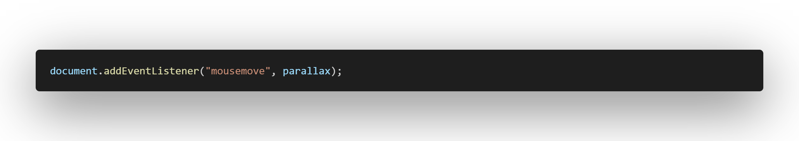
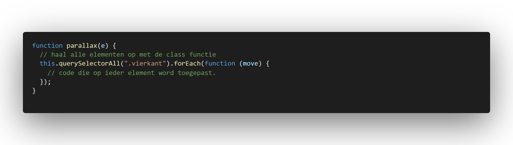
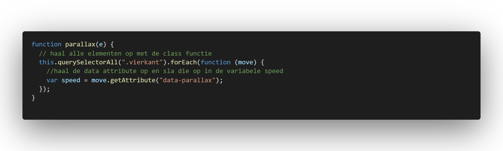
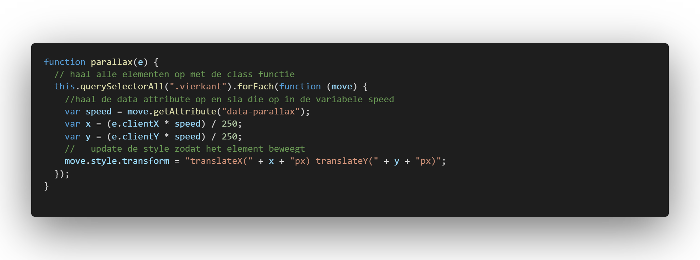
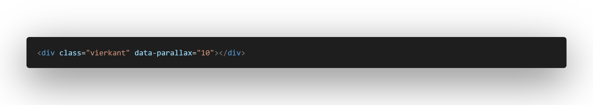

Voorbeeld van het muis parallax effect
 Bekijk op Codepen
Bekijk op Codepen
Uitleg
In dit geval beginnen we bij de javascript, we gaan werken met
data attributes in html, maar dit moeten we eerst aangeven in onze
javascript. om te beginnen gaan we netzoals bij de custom cursor
een event listener laten luisteren naar de muis update zodat we de
muis locatie kunnen ophalen. En iedere keer als de muis positie
veranderd willen de functie parallax oproepen.

Nu gaan we de functie parallax schrijven. In de functie gaan we
eerst alle elementen ophalen met de class, in dit geval .vierkant,
en gaan we een stukje code bij ieder element runnen.

Het zou cool zijn als we in de html tag kunnen aangeven hoe heftig
de beweging moet zijn zodat niet alles het zelfde beweegt. Dit
doen we met een data attribute, dit kunnen we in de html tag
zetten en dan in de javascript ophalen.

Om er voor te zorgen dat de beweging klein blijft en aangepast
word door de data attribute moeten we een kleine bereking doen. De
bereking moeten we doen voor zowel de x as als de y as. Door het
te delen door 250 zorgen we ervoor de beweging klein blijft.
Daarna passen we de x en y positie aan van het element.

In de html kunnen we nu de data attribute gebruiken in combinatie
met de class.
